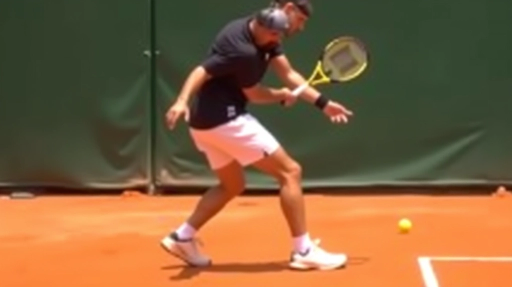

برنامج تأسيسي
أساسيات تقنية الانزلاق
برنامج تأسيسي شامل يغطي المبادئ الأساسية للانزلاق الآمن على الملاعب الترابية. يركز على وضعية الجسم الصحيحة وتوزيع الوزن والحركات الآمنة للدخول والخروج من الانزلاق.
مخصص للمبتدئين والناشئين